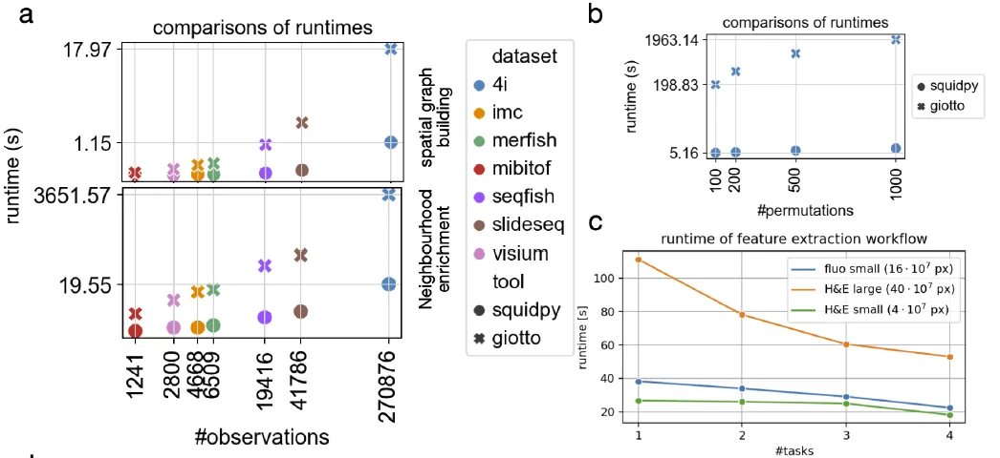
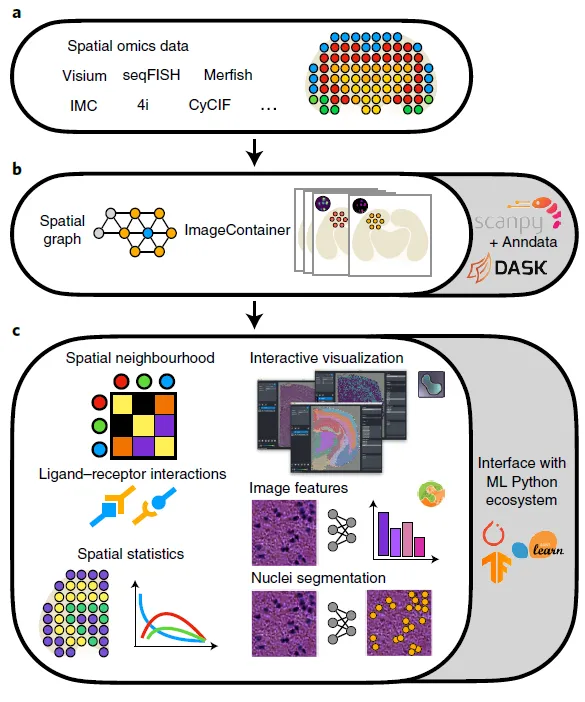
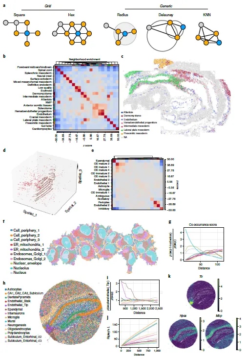
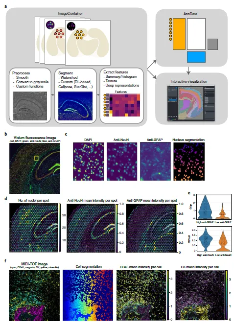
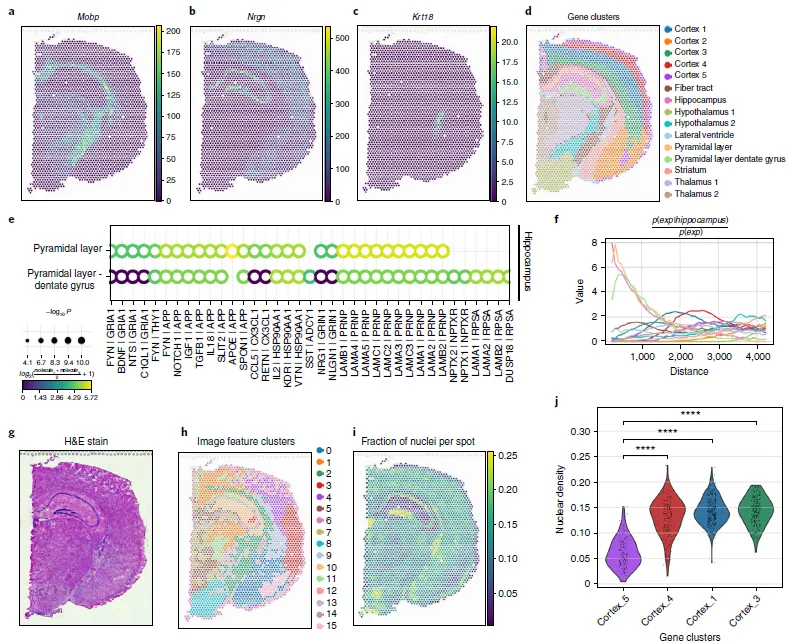

Squidpy: 一站式完成空间多组学数据分析
原文：https://mp.weixin.qq.com/s?__biz=MzAwMzIzOTk5OQ==&mid=2247507858&idx=1&sn=d79c6a2913bbe23a340a247cc0890e84&chksm=9b3ca6c2ac4b2fd4631eea54fe3957cba1db49f157ce71f4438da33a73484480993340b6faf5#rd 合集：空间转录组 / 文献速递
写在前面
空间转录组因为能够同时捕获空间信息与转录组数据而大放异彩。空间转录组虽然也像单细胞测序那样被《Nature Methods》被评为年度技术。但不得不承认其应用规模 与发文量 仍与单细胞测序差了几个数量级，除了实验成本与技术本身的特性外(建库策略多种多样)，数据分析 方面的一些问题也一定程度上限制 了空转的普及，例如空转数据的基础处理现在还没有像单细胞测序中的Seurat、Scanpy这样能够大一统 的分析软件。这导致目前空间技术的分析软件多是聚焦于一种/一类数据或组学的分析过程。空间组学领域也需要一个能够灵活处理空间多组学数据、使用便捷、计算效率高、交互性强、可视化能力丰富的软件，Squidpy似乎是当前最佳的选择。实操的教程可看下面超链接，本文主要对Squidpy的文章进行解读。Squidpy空间转录组学习手册
背景介绍
依靠组织解离的单细胞技术已经在多物种的组织器官中建立了细胞图谱，但空间信息的丢失仍是一个gap，空间各组学就是补上这个gap的"胶布"。目前空间组学的平台也十分多样化，在分辨率(亚细胞结构到细胞团)、复杂性(几十个基因到整个基因组的通量)、多模态(转录组、蛋白质组、代谢组)等方面各不相同。产生大量数据的同时也对现有分析软件提出更大的挑战。Squidpy (S patial Qu antifi cation of Molecular D ata in Py thon，缩写凑的有点牵强。。)在这一背景下应运而生，其建立在Scanpy和AnnData之上，相比于同样能够处理多来源数据并结合了stLearn's图像整合分析的Giotto而言，Squidpy的处理时间明显更占优势(Fig.S1a)。

Fig. S1
Squidpy能够基于Python为多来源数据提供一套通用的、内存友好型的分析与交互可视化工具(Fig.1)，这主要通过Spatial graph和Image Container的管理来实现。Squidpy能够处理2D甚至3D数据的形态学特征整合挖掘，此外，其还集成了Scikit-image、Napari、Dask。这能够帮助Squidpy更好的衔接机器学习的软件生态。Squidpy的官方教程可见：https://squidpy.readthedocs.io/en/latest/

Fig.1
主要内容
一、Squidpy提供了组织空间模式分析工具 空间临近的计算时常需要考虑数据来源(《Nature》空间转录组综述)，Spot类型(例如ST、Visium、DBit-seq)或image-base类型(例如seq-Fish、MERFISH、CyCif、4i)的空间数据构建neighbor graph的方式有所不同(Fig.2a)，而Squidpy可以处理上述所有来源的数据。作者利用Delaunay triangulation 和 permutation-based neighborhood enrichment对多种细胞类型注释和cluster进行计算，可发现各细胞的空间富集程度与数据来源(seqFISH)原文一致(Fig.2b-c)。使用MERFISH测试结果也是如此(Fig.2d-e)。值得一提的是，上述的两个测试过程要比用Giotto执行的过程速度缩短十倍之多(Fig.S1a-b)，这也为更大的数据分析提供了可能性，Fig.2f中便是对270,000个像素点进行亚细胞分辨率分析的结果。不仅可以衡量细胞类群在空间距离上的共现关系，Squidpy还能够通过Moran's I 空间自相关统计量从基因的角度进行考察(Fig.2k)。这些对空间表达模式和理解真正的空间组织提供了有力的工具。

Fig.2 二、Squidpy能够分析并可视化空间组学的大图像数据 空间组学数据往往会附带高清的显微图像，为形态学及生物学特征提供更多信息，Squidpy为这部分数据基于xArray和Dask专门设置了ImageContainer对象进行管理(读取、滑窗、多线程处理)，其中包含了空间坐标信息和分子图谱，从而为二者的交互提供了可能(Fig.3a)。此外，Squidpy还提供了Napari的API，能够无缝的在Jupyter Notebook中进行交互式的可视化并且对图像信息和分子信息同时进行裁剪、区域选择等操作并进行基于机器学习的形态学特征、纹理特征提取。

Fig.3
在细胞核分割(mask标注)方面Squidpy也集成了Cellpose、StarDist等算法，可以利用DAPI染色的结果进行细胞核分割(Fig.3b-c)，并展示预计细胞核的数量。这一步生成的cell-dense pyramidal layer可用于Tangram、Cell2location等去卷积、细胞mapping分析。作者也采用GFAP、RBFOX3蛋白的染色证明了细胞核分割算法的准确率(Fig.3d-f)。形态学与纹理特征也可以进一步通过深度学习的方式或Cellprofiler(交互式的GUI软件)进行处理。 三、Squidpy流程封装了空间转录组的多种分析方法前面我们就说过Squidpy可谓是目前空转的集大成者，其能够完成空间高变基因(Fig.a,b,d)、配-受体分析(基于CellphoneDB和Omnipath，Fig.s1e)、上文提过的细胞共现分析、基于分子/空间位置/形态学的聚类分析(Fig.4g-h)等，可以说能够一站式的完成空间多组学数据的分析。

Fig.4
最后聊聊
面对当下空间各组学分析软件的“割裂”状态，Squidpy集成了许多方法与软件，其数据存储对象也是流通性最高的AnnData，能够帮助大家拜托选择困难症，快速的上手空间多组学数据分析。作为一个内存友好型并且功能强大的工具，作者也在致力于提供GPU加速计算生态。当然，作者也提到了很多优秀的空间组学数据分析、处理工具学有余力的同学可以一一进行学习：Scikit-image、Napari、Dask、Giotto、Scanpy和AnnData、Tangram、Cell2location、CellphoneDB。更多空间组学分析内容可参考：空间转录组学习手册合辑空间转录组合辑
参考：Palla G, Spitzer H, Klein M, Fischer D, Schaar AC, Kuemmerle LB, Rybakov S, Ibarra IL, Holmberg O, Virshup I, Lotfollahi M, Richter S, Theis FJ. Squidpy: a scalable framework for spatial omics analysis. Nat Methods. 2022 Feb;19(2):171-178.

如何联系我们

 公众号后台消息回复不便，这里给大家留一下领取资料及免费服务器(足够支持你完成硕博生涯的生信环境)的微信号 ，方便各位随时交流、提建议（科研任务繁重，回复不及时请见谅）。此外呼声一直很高的交流群 也建好了，欢迎大家入群讨论：
公众号后台消息回复不便，这里给大家留一下领取资料及免费服务器(足够支持你完成硕博生涯的生信环境)的微信号 ，方便各位随时交流、提建议（科研任务繁重，回复不及时请见谅）。此外呼声一直很高的交流群 也建好了，欢迎大家入群讨论：
大家可以阅读完这几篇之后添加给生信入门初学者的小贴士 如何搜索公众号过往发布内容

 您点的每个赞和在看，我都认真当成了喜欢
您点的每个赞和在看，我都认真当成了喜欢